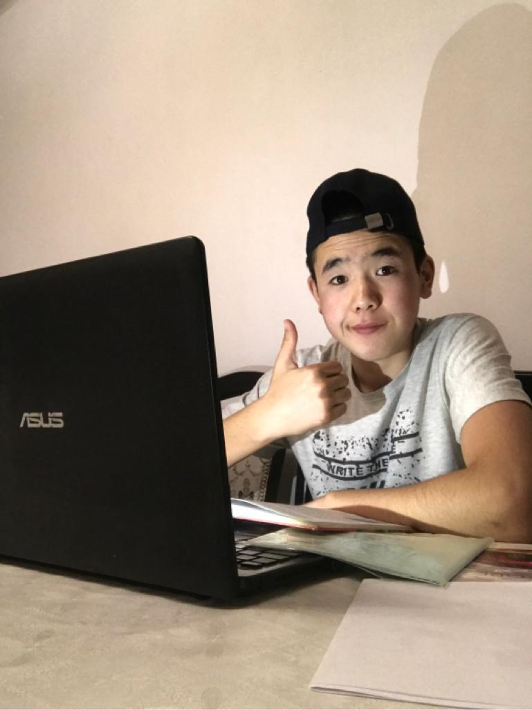

Добро пожаловать!
Всем привет! Меня зовут Жасулан. В этой странице вы можете хоть чуточку поближе познокомиться со мной!

Меня зовут Жасулан. Я родился 11 сентября 2003 года в городе Алматы. Моя семья состоит только из 2 человек. Это Я и моя МАМА ('-').В детстве не был особо одаренным или умным, короче говоря я был как все обычные дети. В детстве ну ОЧЕНЬ любил играть компьютерные игры, и часто ходил в компьютерные клубы с друзьями. В детстве у меня было очень много приключений, я разбил башку своему другу бутылкой, упал в погреб и.т.д.
В 2010 году пошел в 1 класс в школу №6 имени "Кадыргали Жалайыра" в селе Шенгелды.Учился я на 4 и 5. А там мне нравилось кататся на велосипеде. Там я учился до 4 класса.
А в 2013 году я переехал в Зайсан. Зайсан - маленький и красивый город с прекрасной природой!Зайсан нахоится в ВКО. В 4 классе я сменил школу №6 на школу имени "Юрия Гагарина".Там меня замечали только на уроке математики, а в основном я был незамечен.Свободное время я проводил с друзьями . Там я учился только 1 год.
Потом в 5 классе я опять сменил школу. В этот раз я уже был в селе Жарсу. Село находилось 15 минут езды с самого Зайсана. Жил я в Жарсу у родственников.Там я работал целых 10 часов в день. Шучу, но так как в ауле много работы я больше времени проводил на дворе, из за этого я загорел как будто съездил в Египет. В Жарсу я учился только 5-ый класс, потом я опять сменил школу.
Куда? Спросите вы, я обратно поехал в Зайсан где уже успел поучится.В 6 классе мне купили телефон, и я больше всего времени проводил за телефоном играя всякие игры и проводя всю свою время впустую.Там в школе я выделялся тем что я был единственным мальчиком ударником в классе. В 4 и 6 классах я занимался футболом, потом борьбой и потом вообще бросил их. Там я учился 2 года, то-есть 6 и 7 класс.
Потом я опять(неожиданно) сменил школу. Я опять поехал В Жарсу. В Жарсу все мои дни проходили одинаково: рано утром вставал, завтрак, потом в школу, после школы я работал(работал я дома, то есть хозяйственные работы) потом делал уроки, а в 22:00 я лег спать, иногда по ночам я смотрел футбол. И так повторялось день за днем. Там я учился до 9 класса.В 9 классе я ну очень хотел поехать в Алмату что считал дни когда учеба завершиться и я поеду в Алмату. После оканчания 9 класса я взял свой незаслуженный(по моему мнению) красный аттестат.Вот и все я закончил 9 класс, и наконец-то поехал в Алмату, чтобы поступить в колледж. И поступил в колледж Нархоз. И сейчас учусь на программиста.Колледж очень понравился мне! Больше всего нравилось что есть много свободного времени чем в школе. Вот и ВСЕ! Нуууу пока что!!!!!!!!!!
Факты обо мне:
- Обожаю футбол! Болею за Барселону с 10 лет. Любимый игрок: Лионель Месси.
- Делаю анимации(Майнкрафт анимаций)
- Люблю читать книги
- Любимые актеры: Том Хэнкс, Роберт Де Ниро
- Слушаю разные жанры музыки
- Учу Англиский, Немецкий
- Люблю смотреть фильмы и сериалы
- Много фантазирую